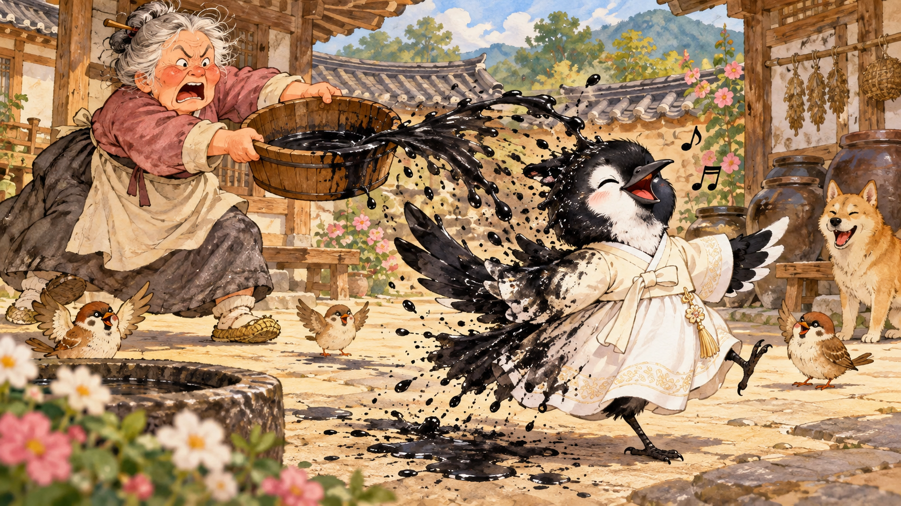

방정환 · 《어린이》 1925년
까치의 옷
3장. 하얀 비단옷이 검어진 까닭

다음 날 노파는 약속대로 새 옷을 만들었습니다. 올빼미에게는 얼룩무늬 옷을, 까치에게는 눈처럼 하얀 비단옷을 입혀 주었습니다.
하지만 까치는 새 옷이 너무 좋아 가만히 있지 못하고 계속 겅정겅정 뛰어다녔습니다. 노파가 옷이 잘 맞는지 보려고 불러도 까치는 신이 나서 듣지 못했습니다.
결국 화가 난 노파는 곁에 있던 검정 물을 까치에게 끼얹었습니다. 까치의 머리와 등, 하얀 옷은 검게 물들었지만 물이 닿지 않은 배 부분만은 하얗게 남았습니다.
그래서 까치는 등이 까맣고 배는 하얀 모습으로, 지금도 새 옷이 좋은 듯 겅정겅정 뛰어다닌답니다.
— 옛이야기처럼 풀어낸 까치의 모습에 관한 이야기